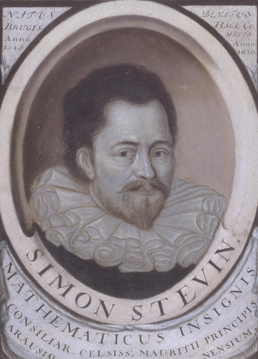

Notación Decimal de Stevin: 1585
La notación decimal de Stevin es un sistema de numeración que se utiliza para representar los números decimales. Fue introducido por el matemático belga Simon Stevin en 1585. Esta notación utiliza el punto decimal (.) para separar la parte entera de la parte fraccionaria de un número. Stevin simplificó el uso de fracciones decimales, lo que facilitó las operaciones aritméticas y el cálculo con números no enteros. Su notación sigue siendo la base de cómo representamos los números decimales hoy en día.
Volver a la página principal